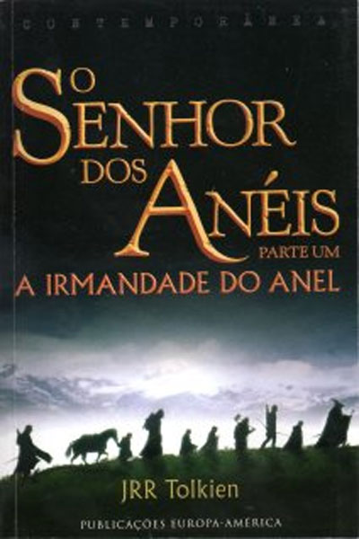
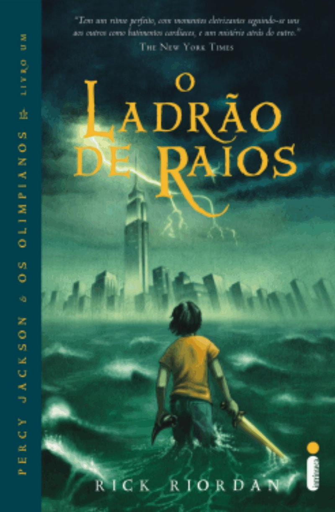

O Senhor dos Anéis | J. R. R. Tolkien
A Sociedade do Anel começa no Condado, a região rural do oeste da Terra-média onde vivem os diminutos e pacatos hobbits. Bilbo Bolseiro, um dos raros aventureiros desse povo, cujas peripécias foram contadas em O Hobbit, resolve ir embora do Condado e deixa sua considerável herança nas mãos de seu jovem parente Frodo. O mais importante legado de Bilbo é o anel mágico que costumava usar para se tornar invisível. No entanto, o mago Gandalf, companheiro de aventuras do velho hobbit, revela a Frodo que o objeto é o Um Anel, a raiz do poder demoníaco de Sauron, o Senhor Sombrio, que deseja escravizar todos os povos da Terra-média. A única maneira de eliminar a ameaça de Sauron é destruir o Um Anel nas entranhas da própria montanha de fogo onde foi forjado. A revelação faz com que Frodo e seus companheiros hobbits Sam, Merry e Pippin deixem a segurança do Condado e iniciem uma perigosa jornada rumo ao leste. Ao lado de representantes dos outros Povos Livres que resistem ao Senhor Sombrio, eles formam a Sociedade do Anel. |
 |
O ladrão de raios | Rick Riordan
|
Nessa primeira aventura da série que conquistou fãs no mundo todo e deu a Riordan o título de “contador de histórias dos deuses”, conhecemos Percy Jackson, um garoto de 12 anos que está prestes a ser expulso do colégio interno. De novo. É a sexta vez que isso acontece. Percy tem que lidar com as consequências do transtorno do déficit de atenção e da dislexia, o que não torna sua vida lá muito fácil. Só que, ultimamente, criaturas fantásticas e os deuses do Monte Olimpo parecem estar saindo dos livros de mitologia grega do colégio para a realidade. Ao que tudo indica, tem um pessoal bem irritado com o pobre garoto. Vários acidentes e revelações inexplicáveis afastam Percy de Nova York, sua cidade, e o lançam em um campo de treinamento muito especial, onde ele é orientado para enfrentar uma missão que envolve humanos diferentes ― metade deuses, metade homens ―, além de seres mitológicos. O raio-mestre de Zeus foi roubado, e é Percy quem deve resgatá-lo. Com a ajuda de novos amigos ― um sátiro e a filha de uma deusa ―, Percy tem dez dias para reaver o raio, que representa a destruição original, e restabelecer a paz no Olimpo. Para conseguir isso, ele precisará fazer mais que capturar um ladrão. Terá que lidar com o pai que o abandonou, resolver uma profecia proposta pelo Oráculo e desvendar uma traição mais ameaçadora que a fúria dos deuses. |
 |